AI Academy · Level 1 · Grade 6 · Week 2 · Student lesson
Input, Process, Output
Learn to understand, design, build, test and explain AI systems responsibly.
Project: Helpful Classroom Sorter
Before you start
Week 1: a visible output does not reveal the decision mechanism.
Plan time to read, investigate and explain. Keep predictions separate from observations.
Student lesson · 1 of 18
Your mission
Start with the target: Trace information through a system without confusing information with a physical action. Try the recall before opening notes.
Your learning target
I can trace information through a system without confusing information with a physical action.
I can explain which details a representation preserves or discards.
I can locate the earliest stage at which an incorrect result could have arisen.
Remember before reading
Close your notes first. A rough first answer helps us choose the right starting point; it is not a score for your ability.
Without opening the old lesson, explain one key idea from AI or Not?. Give an example and a mistake that the idea helps you avoid.
After trying, check the relevant lesson or ask your teacher. Change the part of your explanation that the evidence shows was wrong.
A system transforms information; it does not simply 'know.'
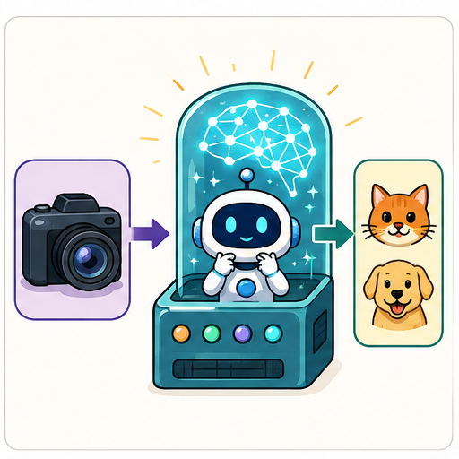
Your target
LEARNING TARGET A library kiosk receives 'mystery', filters a catalogue by genre and displays three titles. No speaker is attached. Draw its information path. A visitor says it read three books aloud.
Which stage contradicts that claim?
Learner name:
Readiness for the connected explanation
In last week's bus case, the forecast number and the display colour came from different decisions. Which decision produced each output?
This week’s end goal
By the end, I can trace an information path and name what a summary loses.
Student lesson · 2 of 18
Notice the evidence
Investigate the supplied Input, Process, Output case. Separate observations, given facts and assumptions before choosing an explanation.
PICTURE STORY
Look Closely Before You Explain
Pictures give clues; evidence tells us what the clues mean.

Start with this puzzle
MYSTERY A music helper receives listening choices, compares them with a ranking process, and suggests a song. The suggestion appears only after information has moved through the system.
What do you notice?
Name three visible details without explaining them yet.
Circle the detail most connected to the system's decision.
Name one detail that may be decoration or distraction.
Make a first prediction and state the clue that supports it.
My observations, prediction, and evidence:
Thinking habit
GOOD THINKING A prediction can change when stronger evidence appears.
A closer explanation
A library kiosk asks Sam for a genre. Sam selects mystery. The kiosk compares that preference with catalogue tags and displays three book titles. Sam says the kiosk has read three books aloud.
That conclusion adds an action that the description never supplied: displaying a title is different from producing spoken audio.
An information path names what enters each stage, what happens there and what leaves it. Treat input and output as roles relative to a stage.
A list of titles is the output of the search, but it could become the input to a separate text-to-speech stage. A component can therefore receive the output of another component without doing the same job.
The kiosk's genre-matching operation can be implemented with a written rule. Nothing in this description establishes that a model was trained.
This connects to Week 1: tracing information tells us what a process needs to do, while mechanism evidence tells us how it does it.
Student lesson · 3 of 18
See how it works
Follow the mechanism for Input, Process, Output. Connect each labelled input, deciding step and result.
VISUAL MECHANISM
Input → Process → Output
Follow the information instead of imagining magic inside the machine.
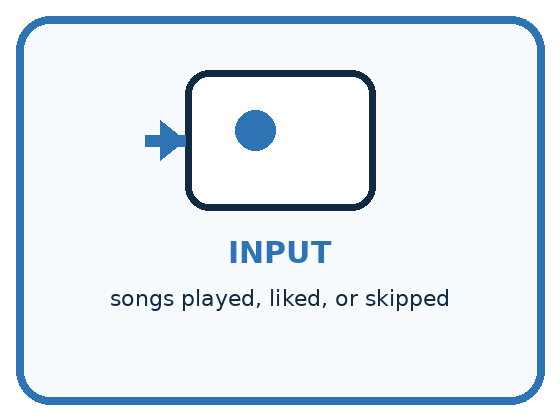
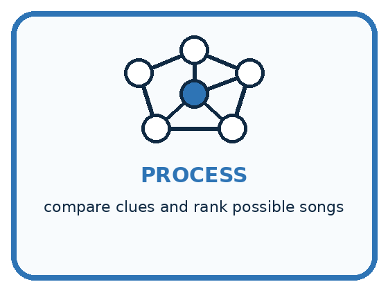
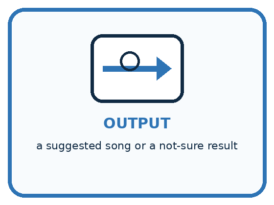
INPUT songs played, liked, or skipped
PROCESS compare clues and rank possible songs
OUTPUT a suggested song or a not-sure result
Key idea
CORE IDEA A system transforms information; it does not simply 'know.'
How the mechanism works
UNDER THE HOOD Input, process, and output are functional roles. The process may contain human choices, fixed rules, calculations, retrieval, or a learned model.
Naming the three stages prevents magical explanations of computer behavior.
Draw a fresh example with all three stages:
A closer explanation
Two possible library information paths
Notice the difference between a title, a description and an entire book. All three can be text, but they represent different amounts of information.
Even a speech stage receiving three titles can speak only those supplied titles; it has not thereby read the full books. Always identify the content of an input, not just its data type.
A recommendation is also different from a loan. Selecting a title does not reserve a copy unless an authorised reservation step exists.
Keeping these distinctions clear prevents us from crediting a system with actions it did not take.
Connect the picture and the explanation
Point to the input, the deciding step and the result in this week’s visual. Explain the same step in ordinary words. A picture helps when you can say what each part represents.
Student lesson · 4 of 18
Compare the cases
Compare the supplied cases for Input, Process, Output. Identify the detail that changes the conclusion.
PICTURE GALLERY
Four Cases, Four Clues
Use the visual cue, then read the evidence carefully.
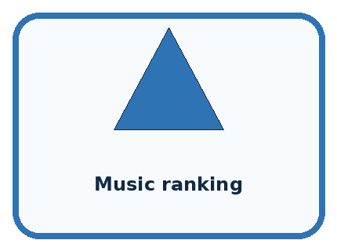
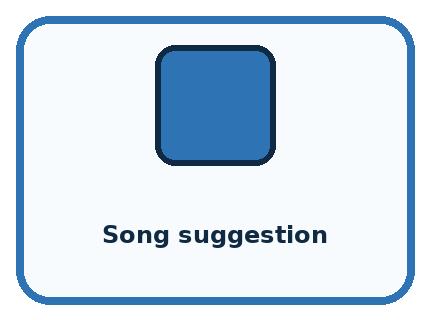
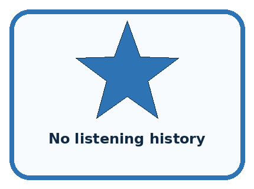
The case to investigate
CASE 1 — Camera app Clue: photo enters before any result. Meaning: input.
The case to investigate
CASE 2 — Music ranking Clue: choices are compared and scored. Meaning: process.
The case to investigate
CASE 3 — Song suggestion Clue: a result is shown to the user. Meaning: output.
The case to investigate
CASE 4 — No listening history Clue: important input is missing. Meaning: not-sure case.
Keep this boundary clear
BOUNDARY The output is not proof that the system understood the input as a person would.
Which two pictures are easiest to confuse? What evidence separates them?
Change one thing in the pictured case
Change one thing
Change: Store red count alongside total.
Predicted result
Prediction: The records become (6,2) and (6,5).
Why the result follows
Reason: Blue count can now be recovered by total minus red, assuming these are the only colours.
Student lesson · 5 of 18
Words that unlock the idea
Use the vocabulary of Input, Process, Output to explain a concrete decision, rather than only memorising definitions.
VOCABULARY
Words You Can See and Use
The badge is a memory cue; the definition does the real thinking work.
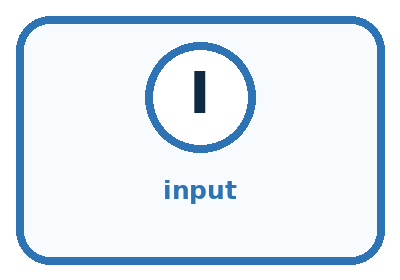
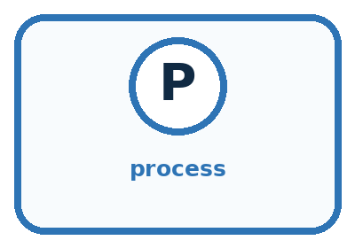
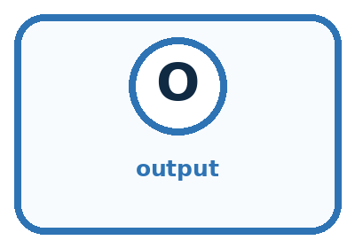
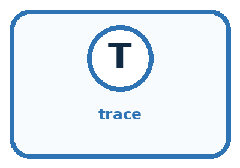
| Word | Meaning | My example |
|---|---|---|
| input | information entering a system | |
| process | the steps that transform information | |
| output | the result produced by the system | |
| trace | follow information through each stage |
Misconception detective
Find the unsupported claim
CLAIM TO REPAIR The computer already knows the answer before it receives input.
Use one vocabulary word and one piece of evidence to repair it:
WORD POWER A strong definition helps you decide something in a new case.
Words used in the closer explanation
| Word | Meaning |
|---|---|
| Representation | A way of recording information so that it can be stored, communicated or processed |
| Information loss | Details that cannot be recovered from the retained representation |
Student lesson · 6 of 18
Follow a worked example
Follow the worked trace for Input, Process, Output, predict a step, then compare with its explanation.
WORKED EXAMPLE
Watch the Reasoning, Not Just the Answer
Every step connects a claim to observable evidence.

The case to investigate
CASE A music helper receives listening choices, compares them with a ranking process, and suggests a song. The suggestion appears only after information has moved through the system.
Step 1
STEP 1 — OBSERVE songs played, liked, or skipped
Step 2
STEP 2 — TRACE compare clues and rank possible songs
Step 3
STEP 3 — CONCLUDE a suggested song or a not-sure result
Model answer
MODEL REASONING Start with what enters, name the actual transformation rather than saying the system thinks, and identify the result. If the process is unknown, state what evidence is missing instead of inventing a mechanism.
A claim to avoid
DO NOT OVERCLAIM The output is not proof that the system understood the input as a person would.
What new evidence could change this answer?
A closer explanation
Worked explanation · Input, Process, Output
Consider two catalogue records. Book A has 90 pages and is about a child solving a seaside mystery. Book B has 90 pages and is about a lost spaceship. If we keep only page count, both become the number 90.
The number is useful for a length limit, but it cannot tell us which story is a mystery. Information that was never retained cannot be recovered just by calculating harder.
| Representation kept | Question it can help answer | Question it cannot settle alone |
|---|---|---|
| Page count 90 | Is the book under 100 pages? | Is its story a mystery? |
| Genre tag mystery | Does it match a mystery request? | Will this particular reader enjoy it? |
| Short summary | What does the description say happens? | What exact sentence occurs on page 42? |
Worked explanation · Input, Process, Output
The phrase cannot settle alone matters. A genre tag might be inaccurate, and a reader might enjoy an unfamiliar genre. A representation is useful only in relation to a question and its limits.
More detail is not automatically better: unnecessary personal information can add risk without helping the task.
Learn from the worked case
Cover the result before checking it. Say what is given, choose the procedure, and follow one step at a time. Then uncover the result and explain your first mismatch. Ask why a step is allowed, not only what number it produces.
A pictorial worked case: Input, Process, Output
A fictional classroom cupboard records coloured pencils, then reports just a total.
The facts we will use
Supplied facts
Box A has 2 red and 4 blue pencils. Box B has 5 red and 1 blue.
Supplied facts
The process adds colour counts and stores only the total, not the two counts.


Read the picture one step at a time
Why this result follows
Why the result follows
Adding preserves the number of pencils but discards how that number was divided between colours. Both distinct inputs lead to the same stored output.
Working backwards from 6 therefore has several possible answers; it is not an instruction to divide equally.
What this example does not establish
Keep the stated limit
The two-colour assumption matters. Extra colours would prevent inferring blue from total and red alone.
Keep the stated limit
Read the labelled picture: Use the richer record to find blue pencils in Box B. Explain why total alone was insufficient.
Keep the stated limit
Change one thing: Store red count alongside total. Predict the result before checking the explanation. What remains the same?
Student lesson · 7 of 18
Find and repair a mistake
Find the unsupported step in the Input, Process, Output claim and explain a repair using the supplied evidence.
COMPARE
Same Result, Different Reason
A comparison helps reveal the true concept boundary.
| Case | Evidence | What it shows |
|---|---|---|
| Camera app | photo enters before any result | input |
| Music ranking | choices are compared and scored | process |
| Song suggestion | a result is shown to the user | output |
| No listening history | important input is missing | not-sure case |
Repair two tempting claims
Challenge claim A
CLAIM A The computer already knows the answer before it receives input.
Repair:
Challenge claim B
CLAIM B The screen is the process because that is where the result appears.
Repair:
A frame for explaining
STRONG ANSWER FRAME I claim ______ because the evidence shows ______. The process is ______. One limit is ______.
A closer explanation
Check the claim against the facts
The kiosk is asked for mystery books under 100 pages but displays a 140-page mystery. Before changing everything, inspect the intermediate records. Was the maximum entered as 100? Did the catalogue say 140?
Did filtering preserve the wrong record? Did the display show a title different from the filtered result? The first mismatch between the intended and actual path helps locate the problem.
A correct-looking final screen can hide an earlier error. A calculator can correctly multiply a number that was transcribed incorrectly, and a warning rule can correctly use an incorrect forecast.
Write down intermediate values so you can test each connection.
Student lesson · 8 of 18
Practise together
Practise Input, Process, Output with support, then explain the deciding step in your own words.
GUIDED PRACTICE
Try It, Check It, Explain It
Use support now so you can succeed independently later.

Explain how the picture story demonstrates this idea: A system transforms information; it does not simply 'know.'
Use a fresh example to explain input.
Trace a new input → process → output example.
Find and repair the error in: The screen is the process because that is where the result appears.
Invent one edge case and name the safe response.
Check with a partner
PARTNER CHECK Point to the evidence. Do not accept an answer that only repeats the vocabulary word.
A closer explanation
A greenhouse records morning temperatures of 18, 22 and 26 degrees C, then retains only the largest value, 26. Can the stored value prove that the temperature rose steadily? No.
The sequence 22, 18, 26 has the same largest value but includes a decrease. These two sequences form a counterexample to the claim that the largest value determines the order.
To solve this, first state exactly what was kept: one maximum. Then ask what the claim requires: the order of several readings.
Finally construct two possible originals that share the retained value but give different answers to the claim. If both originals fit the record, the record alone cannot decide between them.
Practise with less help: Finish the visitor example
Use workbook W2 for the connected example “Representations and information paths”. First fill the input and rule boxes. Try the middle steps before asking for a hint. After a hint, try the next step yourself.
| Plan | Do | Check |
|---|---|---|
| What is given? Which rule or procedure applies? | Record each intermediate step. | Does the result follow? What remains unknown? |
Explain your trace to a partner. Your partner points to one step to check. Swap roles on the next case. Each person writes their own explanation.
Check your reasoning
Use the worked case for Representations and information paths. Proposed explanation: “Every output is the final action”. Decide whether this explanation is supported.
Point to the step or supplied fact that decides; explain your repair if needed.
Answer on your own before discussion. If you are unsure, say which step you need help with.
Explain the picture
Use the richer record to find blue pencils in Box B. Explain why total alone was insufficient.
This is supported practice. Keep the separately named independent case for an attempt before feedback.
Student lesson · 9 of 18
Run the investigation
Investigate Input, Process, Output. Record the prediction, actual observation or labelled paper trace, explanation and next test separately.
EXPLORER LAB
Human Music Recommender
Predict first, test honestly, and explain what the evidence means.

1. Predict
State your prediction before the result is known.
2. Investigate
Complete the task: Trace a music recommender and draw all three stages.
3. Compare cases
Keep a normal case and an edge case clearly separated.
4. Record honestly
Record what happened—even when it does not match your prediction.
5. Explain and plan the next test
Explain the result, one limitation, and the next useful test.
| Case | Prediction | Observed result | What it means |
|---|---|---|---|
| Normal | |||
| Edge |
Use a fresh case after support
INDEPENDENCE After support is removed, repeat the proof with a fresh case.
Plan → try → check
Before trying: what do I expect, and why? While trying: which step could first go wrong? Afterwards: what did I actually observe, and what should change? Keep “not run” if you only traced the procedure.
Student lesson · 10 of 18
Build your understanding
Move from recall to tracing, diagnosis and transfer in Input, Process, Output. Explain why each step is justified.
PRACTICE LADDER
Climb from Recall to Defense
Each step asks for a stronger kind of understanding.

RECALL Define input.
EXPLAIN A system transforms information; it does not simply 'know.'
TRACE Show the input, process, and output.
DIAGNOSE Repair: The computer already knows the answer before it receives input.
TRANSFER Apply the idea to a new home or classroom case.
CREATE Design one revealing test.
DEFEND Give a claim, evidence, mechanism, limit, and safe action.
When to retry
RETRY RULE A coached answer becomes mastery only after you solve a different case independently.
Student lesson · 11 of 18
Connect your project
Apply this week’s idea to Helpful Classroom Sorter. Keep an annotated decision and the evidence supporting it.
PROJECT
Helpful Classroom Sorter
Build one coherent system across the year, one evidence-based decision at a time.

THIS WEEK'S CHECKPOINT Draw the Classroom Sorter's first input-process-output map and show where a person may review the result.
What real classroom need does this serve?
What information is necessary—and what should stay private?
What happens inside the process?
What normal and edge cases will you test?
When should it say not sure or ask a person?

Responsible design
RESPONSIBLE DESIGN The output is not proof that the system understood the input as a person would.
My project decision:
Evidence for your project
Choose sorter inputs that retain the clues needed for its decision; draw the transformation and identify discarded details.
Student lesson · 12 of 18
Show what you know
Use a genuinely new case for independent evidence. Previously discussed examples remain practice; use the separately named independent case before feedback.
MASTERY
Fresh-Case Independent Proof
Complete this after teaching and guided practice have ended.

What success looks like
REQUIRED PROOF Trace a fresh system with an accurate input, process, and output, then explain one missing-input case.
□ Name or draw the fresh case.
□ Trace input, process, and output.
□ State the conclusion and strongest evidence.
□ Name one limit, failure, missing clue, or fairness/privacy concern.
□ Explain one safe next action or improvement.
Independent evidence:
Check your explanation
SELF-CHECK Start with what enters, name the actual transformation rather than saying the system thinks, and identify the result. If the process is unknown, state what evidence is missing instead of inventing a mechanism.
My level: □ Not yet □ With one hint □ Independently □ I can teach it
Connect to the next lesson
NEXT BRIDGE Carry today's evidence habit into: Sensors Are Messengers.
Student lesson · 13 of 18
Study a complete case
Revisit the complete Input, Process, Output case for supported practice. Repeated examples do not become fresh assessments.
Week 2 Worked case
Use the supplied details to practise the weekly concept before attempting the independent question. This case extends the illustrated lesson.
The situation
A playlist helper receives a mood, matches song tags and displays three titles.
The question
Name input, process and output. Is displaying titles the same as playing audio?
Worked explanation
Input is mood; process is tag matching; output is titles. Audio playback is another step. Matching can use fixed rules; the description alone does not establish machine learning.
Explain it in your own words
Which detail supports the answer, and why does it matter?
Trace the supplied case visually
From mood to song titles
| Evidence or stage | Value or result |
|---|---|
| Mood | Input from listener |
| Tag matching | Process chooses matches |
| Three titles | Displayed output |
| Audio playback | A separate possible step |
A playlist helper receives a mood, matches song tags and displays three titles.
Name input, process and output. Is displaying titles the same as playing audio?
Input is mood; process is tag matching; output is titles. Audio playback is another step. Matching can use fixed rules; the description alone does not establish machine learning.
Student lesson · 14 of 18
Try a new case independently
Attempt the reserved new case before feedback. Record support; the earlier examples below remain additional practice.
Independent case: Investigate a new loss of information
A classroom device receives four scores and stores only their total, 20. A student claims that every score must be 5. Give two different lists of four nonnegative whole-number scores with total 20.
Explain precisely what the stored total establishes and what it does not.
Attempt this case before feedback. Record any help. Earlier examples below are further practice; a case already practised with feedback cannot establish fresh transfer.
Week 2 Independent application
Close the worked explanation. Apply the idea to this different question without copying.
A classroom fan receives a temperature reading, compares it with 25 degrees C, and turns on. Name the input, process and output. What should happen if the reading is missing?
My answer, with a trace, calculation or supporting evidence
Create and test
Change one relevant detail. Predict the result before testing. Include a boundary or missing-information case when it helps reveal a limit.
My changed input and expected result
Connect to your project
Draw the Classroom Sorter's first input-process-output map and show where a person may review the result.
The evidence I will keep
Your teacher has the independent answer and scoring criteria. Complete the matching workbook week to keep your practice evidence together.
Transfer practice from the original programme
A library kiosk receives 'mystery', filters a catalogue by genre and displays three titles. No speaker is attached. Draw its information path. A visitor says it read three books aloud. Which stage contradicts that claim?
Use feedback to improve
Attempt the independent case before hints. Record whether you worked alone, used a hint or followed a model. After feedback, fix the first unsupported step and explain why it changed.
A later check uses a changed case, not a copied answer.
Student lesson · 15 of 18
Your lesson route
Use this map to navigate Input, Process, Output, connect the goals to tasks and keep one evidence record for each attempt.
Start with this question: A fictional classroom cupboard records coloured pencils, then reports just a total.
| By the end, I can | How I will show it |
|---|---|
| Trace information through a system without confusing information with a physical action | Explain the deciding step, show a trace or test, and state one limit. |
| Explain which details a representation preserves or discards | Explain the deciding step, show a trace or test, and state one limit. |
| Locate the earliest stage at which an incorrect result could have arisen | Explain the deciding step, show a trace or test, and state one limit. |
Remember → watch and explain → try with help → investigate → try independently → keep project evidence. Your teacher may spread this lesson across several classes.
Keep your first prediction. Compare it with what the evidence shows and explain any change.
Student lesson · 16 of 18
Finish and return
Explain Input, Process, Output without notes, identify a remaining question and plan a later check with a changed case.
Close your notes. Explain this goal in your own words: Trace information through a system without confusing information with a physical action
If you are unsure, return to the worked picture and explain one arrow. If you are ready, change an input or assumption and justify your prediction.
Save your workbook evidence. At the next review, try a different case before opening your old answer.
Student lesson · 17 of 18
Supported practice, repair and portfolio
Attempt supported questions before using hints or feedback. Review a missing building block, then keep the completed work.
Use this supported practice once, in the browser or on paper. Keep the reserved independent assessment for a separate first attempt before teacher feedback.
A fictional classroom cupboard records coloured pencils, then reports just a total.
Practice 1: explain the deciding evidence
Which labelled step matches this detail? The saved totals cannot tell which box has more red pencils.
1. Add counts
2. Read colours
3. Ask a new question
4. Store total
Hint · try first
Hint if needed: Read the steps in the pictorial case. Match the supplied detail to the stage that performs or records it.
Feedback · compare after trying
After your attempt, compare with the supported explanation: Ask a new question The saved totals cannot tell which box has more red pencils.
Adding preserves the number of pencils but discards how that number was divided between colours. Both distinct inputs lead to the same stored output.
Working backwards from 6 therefore has several possible answers; it is not an instruction to divide equally.
Practice 2: explain the deciding evidence
Changed case · predict first
Changed-case practice: Store red count alongside total. Which conclusion is supported by the supplied facts?
1. The records become (6,2) and (6,5).
2. This one example guarantees correct results for every future input.
3. We can decide the result without examining the changed input or the procedure.
Hint · try first
Hint if needed: Use the changed condition and the deciding step in the pictorial trace. The answer must say what follows from those facts.
Feedback · compare after trying
After your attempt, compare with the supported explanation: The records become (6,2) and (6,5). Blue count can now be recovered by total minus red, assuming these are the only colours.
Repair a missing building block
Review AI or Not? (ai-1/1). Goal: Distinguish an observed result from an explanation of how it was produced. Short practice: Point to the learned stage. Does the changed display prove the weather forecast changed?.
Return to this week and explain what you changed.
Keep your completed work
Use Download completed work in the hosted lesson to export your answers, reflections, practice feedback and code-run evidence. Open the HTML copy to read or print it.
Drafts stay in this browser when storage is available; clear drafts on a shared device.
Student lesson · 18 of 18
Visual concept journey
Explain each Input, Process, Output graphic using its labels, deciding evidence and relevant limitation.
01. Input, Process, Output: the case

A fictional classroom cupboard records coloured pencils, then reports just a total. Supplied facts: Box A has 2 red and 4 blue pencils. Box B has 5 red and 1 blue.
The process adds colour counts and stores only the total, not the two counts.
Point to the given fact that matters most. Explain why it matters.
02. Follow the deciding steps

Read colours: A: red 2, blue 4. B: red 5, blue 1. → Add counts: A: 2+4=6. B: 5+1=6. → Store total: Both records become total 6. → Ask a new question: The saved totals cannot tell which box has more red pencils.
Point to each numbered stage and explain which recorded input it uses.
03. Different pencil colours. The same total.

Box A: 2 red pencils and 4 blue, total 6. Box B: 5 red pencils and 1 blue, total 6. The equal totals do not preserve the colour counts.
Read the labels and values. Explain the relationship the model shows.
04. Change one thing. Trace what follows.

Original case: The saved totals cannot tell which box has more red pencils. Changed condition: Store red count alongside total. Expected result: The records become (6,2) and (6,5).
Reason: Blue count can now be recovered by total minus red, assuming these are the only colours.
Predict before checking the worked changed-case result. Name what changed and what the supplied facts allow you to conclude.
05. Connect the explanation to its limit

Adding preserves the number of pencils but discards how that number was divided between colours. Both distinct inputs lead to the same stored output.
Working backwards from 6 therefore has several possible answers; it is not an instruction to divide equally. Limit: The two-colour assumption matters. Extra colours would prevent inferring blue from total and red alone.
Explain the case, then point to a limit on the claim.
06. Make the idea visible in your project

Choose sorter inputs that retain the clues needed for its decision; draw the transformation and identify discarded details. Draw your input, deciding step, result and limit.
Supported question: Use the richer record to find blue pencils in Box B. Explain why total alone was insufficient.
Draw your project trace and justify the deciding step using evidence.